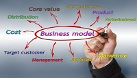

Difference between business plan and business model. The business model is the mechanism through which the company generates its profit while the business plan is a document presenting the company's strategy and expected financial performance for the years to come.
Business plan and business model are 2 completely different notions. What's the difference between the 2?
The business model is the mechanism through which the company generates its profit while the business plan is a document presenting the company's strategy and expected financial performance for the years to come. As you can see, the business model is at the center of the business plan. The business model describes how the company is positioned within its industry's value chain, and how it organizes its relations with its suppliers, clients, and partners in order to generate profits. The business plan translates this positioning in a series of strategic actions and quantifies their financial impact.
Here are some examples of the most common business models:
Let's dive in to these examples in greater details.
It's the most basic business model, the company sales the products and services it produces. In order for that business model to be viable, the company needs to generate enough sales to cover its production, distribution, and storage costs.
Here the goal is to generate revenues by selling advertising space. On the Internet this model can be segmented based on the type of advertising:
This business model is already slightly more complex than the production one given that the company first need to invest in order to create a large audience before it can attract advertisers.
The company acts as an intermediary between the seller and the buyer and takes a cut of every sell it helps generate. This business model is generally less risky than the 2 previous ones (and therefore less profitable) as the level of investment required can be minimal.
The company receives revenues from its subscribers at regular intervals. This business model has one clear advantage: the company knows in advance how much revenues it is going to generate. The flip side is that it often takes several months to recover the subscriber acquisition costs leading to a lower cash generation at the beginning of the cycle.
The company offers 2 versions of its product. A free version with a limited set of features which goals are either to raise awareness about the product or to create a network effect. And a paid version, comprising more features, from which it can generate enough margin to cover the cost of the free users. The keys to success with this business model are to be able to generate huge network effect (example: LinkedIn) and/or to convert a sufficient number of free users into paid customers (example: Uservoice).
The company offers one product for free or at a price close to its production cost and generates a profit on the sale of accessories. The classic example of this business model is the sale of razor blades: razors are sold for nothing but you have to continually buy expensive blades to be able to use it. These lists of business models is far from being exhaustive, and if you have questions regarding a business model in particular feel free to ask it using the comment form below.